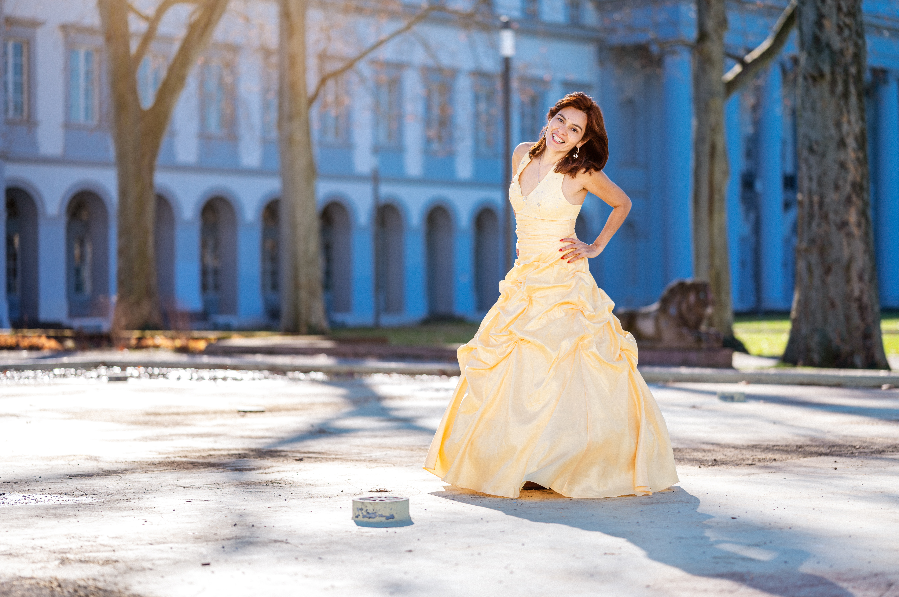
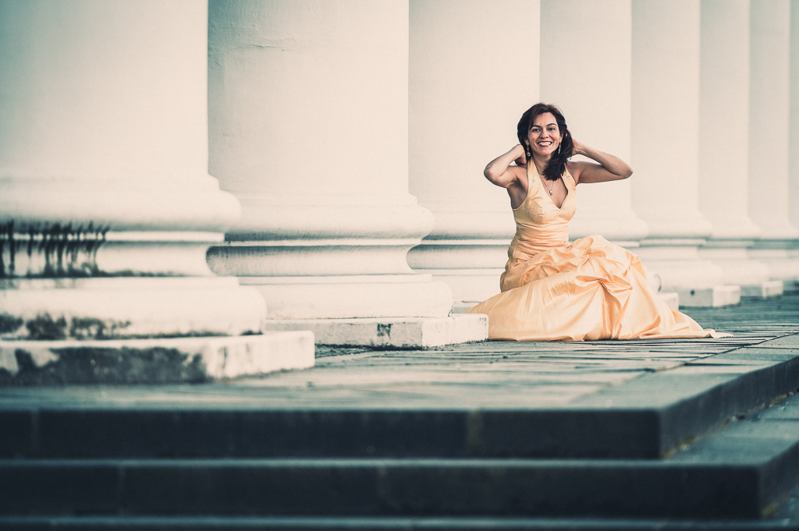
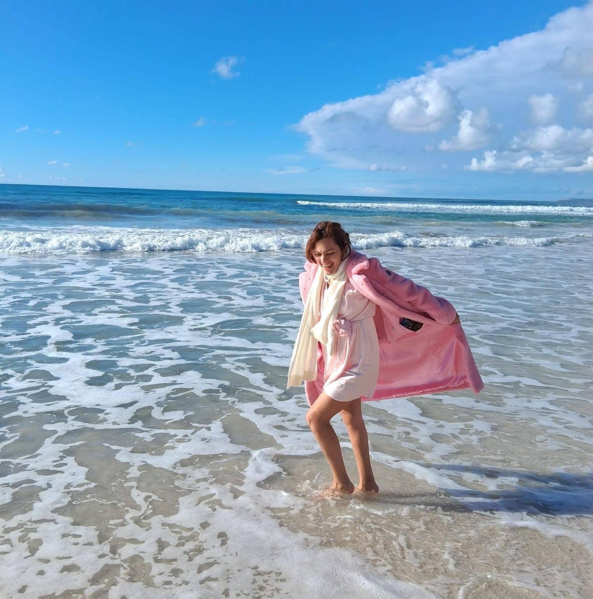
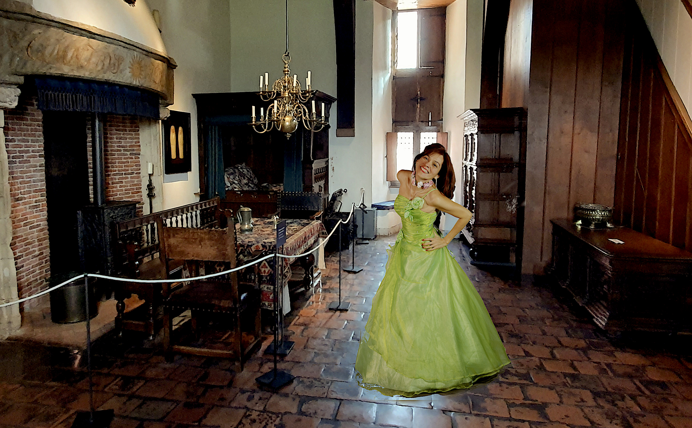

Faith.
Passion.
Purpose.
A personal journey where technology, creativity, books and ideas come together.
Different passions.
One creative vision.
CAROLINDA STUDIO began with a simple idea: different passions do not have to live in separate worlds.
Technology and creativity can belong together. Books and digital ideas can belong together. Photography and storytelling can belong together. And a personal vision can become something that inspires others.
CAROLINDA STUDIO is my space to bring these worlds together.

Technology meets creativity.
My journey has always been shaped by both technology and creativity.
My education and professional experience have taken me through informatics and IT, geoinformatics and IT geomatics, project work, digital development, business and management.
These different areas have taught me to think in systems, understand technology, organize projects and turn ideas into something concrete.
But technology has never been the only part of my story. Alongside the technical world, I have always been drawn to photography, visual aesthetics, books, creativity, communication and new ideas.
Over time, I realized that I did not want to choose between these worlds. I wanted to connect them.
Ideas become
digital experiences.
Technology gives ideas the possibility to become real.
I am interested in digital products, software, websites, applications, artificial intelligence and new digital business models.
I enjoy not only using technology, but understanding how things work and building new solutions from an idea.
For me, technology is a creative tool.
A website can become a brand. An application can become a service. A digital product can become a business. And an idea can become something that reaches people far beyond its original starting point.
Create something
meaningful.
Creativity is an important part of who I am.
Photography, visual storytelling, fashion, beauty, design and creative concepts allow me to communicate ideas in a different way.
Sometimes an image can tell a story without words. Sometimes a simple concept can become the beginning of a much bigger project.
CAROLINDA STUDIO gives me the freedom to explore these ideas and connect visual creativity with technology, business and storytelling.

Stories worth
discovering.
Books have a special place within CAROLINDA STUDIO.
They preserve stories, knowledge, experiences and ideas. They can take us into another world, introduce us to another perspective or simply give us a quiet moment to think.
My interest in books is therefore not limited to reading. It also includes discovering, presenting, creating and connecting people with stories.
This is one of the reasons why the Books area has become an important part of CAROLINDA STUDIO.
It also connects naturally with my work around the Antiquariat Lehmann-Dronke, where traditional books meet modern digital possibilities.
EXPLORE BOOKS
Building the future,
one idea at a time.
One of my goals is to create digital projects that are useful, beautiful and meaningful.
This includes websites, applications, digital products and technology-driven ideas.
I am particularly interested in the connection between creativity, technology and entrepreneurship.
A project should not only look good. It should solve a problem, create value or give people a better experience.

One studio.
Many possibilities.
CAROLINDA STUDIO is the place where all these interests come together.
It is more than a website. It is a creative and entrepreneurial space for photography, books, digital projects, technology and new ideas.
The studio is intentionally open to different possibilities. Some projects may begin as a simple idea. Others may become products, businesses, collaborations or independent brands.
The common element is the desire to create something with purpose.
Building what comes next.
I want to continue building.
Building digital products.
Building creative projects.
Building businesses.
Building new opportunities.
And learning along the way.
My vision is to create independent projects and income streams that combine creativity, technology and entrepreneurship.
Some ideas will remain small. Others may grow into something much bigger.
I do not believe that the future has to be completely planned before the first step is taken. Sometimes the most important thing is simply to begin.
Creating with meaning.
At the heart of my journey is faith.
For me, success is not only about what we achieve. It is also about why we create, how we treat people and what we choose to do with the talents and opportunities we have been given.
I want my work to reflect creativity with purpose, ambition with responsibility and beauty with meaning.
Welcome to
CAROLINDA STUDIO.
A place for stories. A place for ideas. A place for creativity. A place where technology meets imagination. And a place where new projects can become reality.